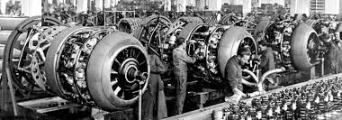
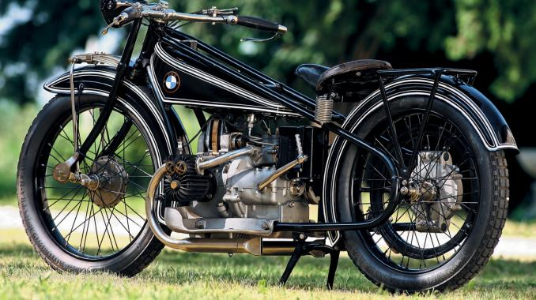
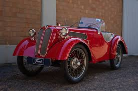
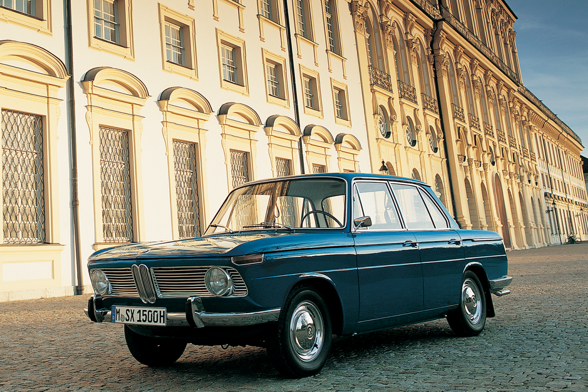
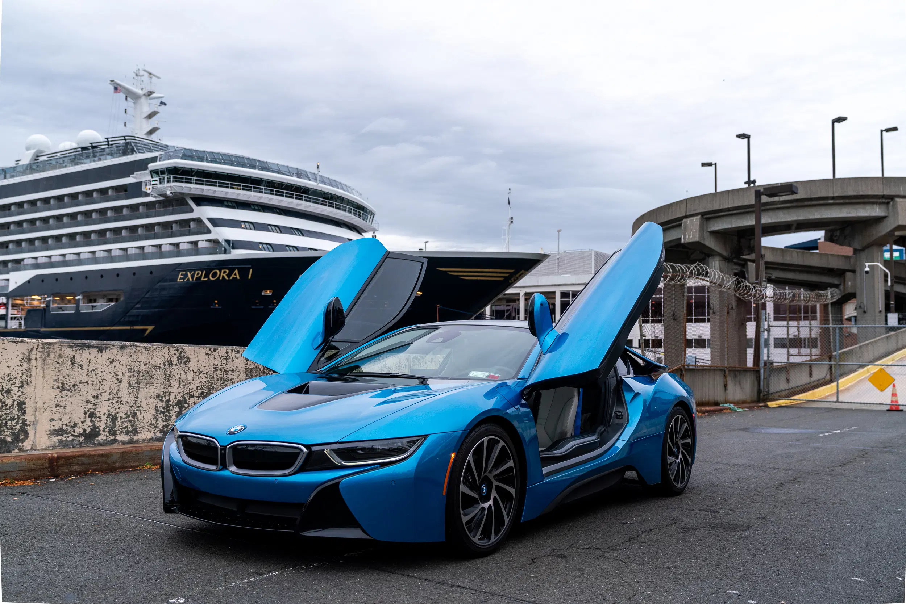

🕰️ BMW Through the Decades
Company Founding
BMW (Bayerische Motoren Werke) was founded in Munich, Germany, originally as an aircraft engine manufacturer.
First Motorcycle
BMW introduced the R32, its first motorcycle featuring the signature boxer twin-cylinder engine.
First Automobile
BMW acquired the Dixi automaker and began producing the 3/15 PS, its first car based on the Austin 7.
New Class Sedans
The 1500 model launched the "New Class" of sport sedans that would evolve into the iconic 3 Series.
BMW M Division
BMW Motorsport GmbH was founded, creating high-performance M models beginning with the 3.0 CSL.

BMW i Brand
BMW announced its "Project i" initiative focusing on sustainable mobility, leading to the i3 and i8.
🏆 Key Milestones
1936
Introduction of the 328 roadster, one of the most successful sports cars of the 1930s
1975
First generation 3 Series (E21) launched, beginning BMW's most successful model line
1999
X5 introduced as BMW's first Sports Activity Vehicle, creating a new market segment
2013
BMW i3 launched as the first premium electric vehicle with carbon fiber construction